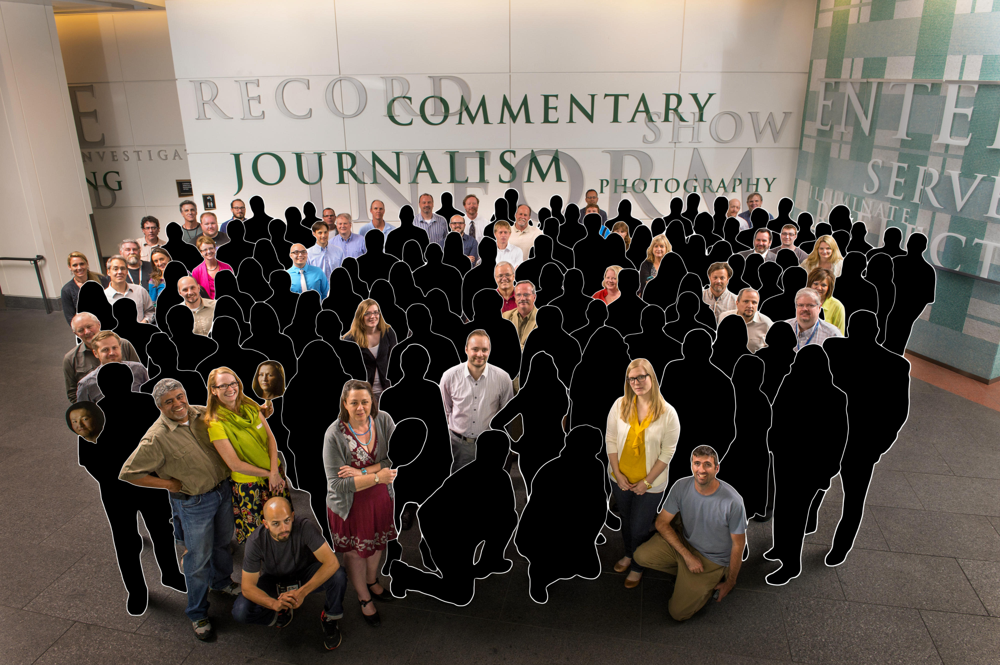

Outside investors who own The Denver Post slashed a third of The Post’s newsroom staff, the latest in a series of staff reductions that now threatens to destroy the state’s largest newspaper, a 126-year-old institution in Colorado.
We demand that Denver Post owner Alden Global Capital sell the newspaper to local interests who care about this state and the role that vibrant, independent journalism plays in its civic life.
With the latest announced cuts, The Post’s roster of non-management journalists will shrink to 49 from the 200 who staffed the Post newsroom only seven years ago when Alden Global assumed control of the newspaper. This slow strangulation of The Post should be of concern to all Coloradans who value the responsibility that media have to report comprehensively on government, education, business, politics, sports, the arts and other affairs of the community. Alden Global’s callous hollowing out of The Post has grievously wounded the newspaper’s ability to play that role.
There is a way to save The Post, but time is running out. In Minneapolis, local businessman Glen Taylor bought the Minneapolis Star Tribune four years ago to preserve its role as the dominant media voice in the region. Boston Red Sox owner John Henry acquired the Boston Globe in 2013, claiming that “great institutions,” like the Globe, “have stewards, not owners” and “Stewardship carries obligations and responsibilities to citizens first and foremost — not to shareholders. This is especially true for news organizations.”
In Salt Lake City, Paul Huntsman, whose family is prominent in Utah’s business, political and civic life, bought The Salt Lake Tribune two years ago from The Denver Post’s current owners. In a letter to readers, Huntsman said he bought The Tribune “for the betterment of the community and to sustain an independent voice for future generations.” He added: “A great state deserves a great newspaper.”
In Philadelphia, philanthropist Gerry Lenfest created a unique nonprofit foundation to be the parent of the two Philly newspapers, the Inquirer and Daily News. The purchase of The Washington Post by Amazon’s Jeff Bezos has enhanced its position as one of the country’s best newspapers.
Colorado needs business and philanthropic leaders to similarly step up and save The Denver Post. We ask Post readers to contact Alden Global Capital at 885 Third Ave., New York, N.Y. 10022, (212) 888-5500, to convey this message: Sell The Post to owners who care about local journalism and our community.